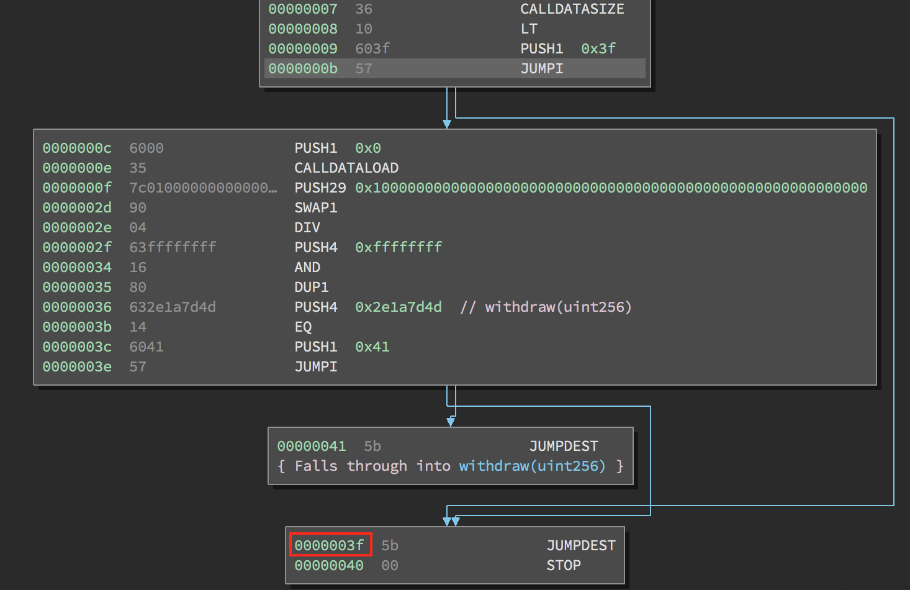

Виртуальная машина Ethereum
В основе протокола и работы Ethereum лежит виртуальная машина Ethereum Virtual Machine, или сокращенно EVM. Как можно догадаться из названия, это вычислительный механизм, не сильно отличающийся от виртуальных машин Microsoft .NET Framework или интерпретаторов других языков программирования с компиляцией байткода, таких как Java. В этой главе мы подробно рассмотрим EVM, включая его набор инструкций, структуру и работу, в контексте обновления состояния Ethereum.
Что такое EVM?
EVM - это часть Ethereum, которая занимается развертыванием и исполнением смарт-контрактов. Простые транзакции по передаче стоимости от одного EOA к другому, практически говоря, не требуют его участия, но все остальное будет связано с обновлением состояния, вычисляемым EVM. На высоком уровне EVM, работающий на блокчейне Ethereum, можно представить как глобальный децентрализованный компьютер, содержащий миллионы исполняемых объектов, каждый из которых имеет собственное постоянное хранилище данных.
EVM - это квази-Тьюринг-полная машина состояний; "квази" - потому что все процессы выполнения ограничены конечным числом вычислительных шагов количеством газа, доступного для выполнения любого данного смарт-контракта. Таким образом, проблема остановки "решена" (все выполнения программы прекращаются), и ситуация, когда выполнение может (случайно или злонамеренно) продолжаться вечно, что приведет к полной остановке платформы Ethereum, исключена.
EVM имеет стековую архитектуру, хранящую все значения в памяти в стеке. Он работает с размером слова 256 бит (в основном для облегчения хэширования и операций с эллиптическими кривыми) и имеет несколько адресуемых компонентов данных:
- неизменяемое ПЗУ программного кода, загруженное байткодом смарт-контракта, который должен быть выполнен
- Энергозависимая память, каждое место которой явно инициализировано нулем
- Постоянное хранилище, являющееся частью состояния Ethereum, также с нулевой инициализацией
Существует также набор переменных среды и данных, которые доступны во время выполнения. Мы рассмотрим их более подробно позже в этой главе.
Архитектура и контекст выполнения виртуальной машины Ethereum (EVM) показывает архитектуру EVM и контекст выполнения.
Рисунок 1. Архитектура виртуальной машины Ethereum (EVM) и контекст исполнения
Сравнение с существующей технологией
Термин "виртуальная машина" часто применяется к виртуализации реального компьютера, обычно с помощью "гипервизора", такого как VirtualBox или QEMU, или всего экземпляра операционной системы, например, KVM в Linux. Они должны обеспечивать программную абстракцию, соответственно, реального оборудования, системных вызовов и других функций ядра.
EVM работает в гораздо более ограниченной области: это просто вычислительный механизм, и как таковой он обеспечивает абстракцию только вычислений и хранения данных, подобно, например, спецификации виртуальной машины Java (JVM). С точки зрения высокого уровня, JVM предназначена для обеспечения среды выполнения, которая не зависит от базовой ОС или аппаратного обеспечения, что обеспечивает совместимость с широким спектром систем. Языки программирования высокого уровня, такие как Java или Scala (которые используют JVM) или C# (который использует .NET), компилируются в набор инструкций байткода соответствующей виртуальной машины. Таким же образом EVM выполняет свой собственный набор инструкций байткода (описанный в следующем разделе), в который компилируются языки программирования смарт-контрактов более высокого уровня, такие как LLL, Serpent, Mutan или Solidity.
Таким образом, EVM не имеет возможности планирования, поскольку порядок выполнения организуется извне - клиенты Ethereum просматривают проверенные блокчейн-транзакции, чтобы определить, какие смарт-контракты нужно выполнить и в каком порядке. В этом смысле мировой компьютер Ethereum является однопоточным, как JavaScript. У EVM также нет никакого "системного интерфейса" или "аппаратной поддержки" - нет физической машины, с которой можно было бы взаимодействовать. Компьютер мира Ethereum полностью виртуальный.
Набор инструкций EVM (операции байткода)
Набор команд EVM предлагает большинство операций, которые вы можете ожидать, включая:
- Арифметические и побитовые логические операции
- Запросы контекста выполнения
- Доступ к стеку, памяти и хранилищу
- Операции с потоком управления
- Регистрация, вызов и другие операторы
В дополнение к типичным операциям байткода, EVM также имеет доступ к информации о счете (например, адрес и баланс) и информации о блоке (например, номер блока и текущая цена на газ).
Давайте начнем более детальное изучение EVM с рассмотрения доступных операционных кодов и того, что они делают. Как и следовало ожидать, все операнды берутся из стека, а результат (где это применимо) часто помещается обратно на вершину стека.
Примечание: Полный список опкодов и соответствующую им стоимость газа можно найти в [evm_opcodes].
Доступные опкоды можно разделить на следующие категории:
Арифметические операции
Арифметические инструкции опкода:
ADD //Добавление двух верхних элементов стека
MUL //Умножение двух верхних элементов стека
SUB //Вычитание двух верхних элементов стека
DIV // Целочисленное деление
SDIV // Целочисленное знаковое деление
MOD //Операция modulo (остаток)
SMOD //Знаковая операция модуляции
ADDMOD //Добавление по модулю любого числа
MULMOD // Умножение по модулю любого числа
EXP //Экспоненциальная операция
SIGNEXTEND //Увеличить длину целого знакового числа с двойным дополнением
SHA3 //Вычисление хэша Keccak-256 блока памяти
Обратите внимание, что вся арифметика выполняется по модулю 2256 (если не указано иное), и что нулевая степень нуля, 00, принимается за 1.
Операции со стеком
Инструкции управления стеком, памятью и хранилищем:
POP //Удаление верхнего элемента из стека
MLOAD //Загрузка слова из памяти
MSTORE //Запись слова в память
MSTORE8 //Запись байта в память
SLOAD //Загрузка слова из хранилища
SSTORE //Сохранение слова в памяти
MSIZE //Получение размера активной памяти в байтах
PUSHx // Поместите элемент байта x в стек, где x может быть любым целым числом от
// от 1 до 32 (полное слово) включительно
DUPx //Дублирование x-го элемента стека, где x может быть любым целым числом от
// от 1 до 16 включительно
SWAPx //Обмен 1-го и (x+1)-го элементов стека, где x может быть любым
// целое число от 1 до 16 включительно
Операции технологического процесса
Инструкции для потока управления:
STOP // Выполнение остановки
JUMP //Установите счетчик программы на любое значение
JUMPI //Условное изменение программного счетчика
PC //Получение значения программного счетчика (до инкремента
//соответствующий этой инструкции)
JUMPDEST //Маркировка допустимого места назначения для прыжков
Системные операции
Опкоды для системы, выполняющей программу:
LOGx // Добавить запись журнала с x темами, где x - любое целое число
//от 0 до 4 включительно
CREATE //Создайте новую учетную запись с ассоциированным кодом
CALL //Вызов сообщения на другой счет, т.е. запустить другой
//код счета
CALLCODE //Мессадж-вызов на этот счет с другого счета
//код счета
RETURN //Остановить выполнение и вернуть выходные данные
DELEGATECALL //Вызов сообщения на этот счет с альтернативой
//код счета, но сохраняя текущие значения для
// отправитель и значение
STATICCALL //Статический вызов сообщения на счет
REVERT //Выполнение остановки, отмена изменений состояния, но возврат назад
//данные и оставшийся газ
INVALID //Означенная недействительная инструкция
SELFDESTRUCT //Выполнение и регистрация счета для удаления
Логические операции
Опкоды для сравнения и побитовой логики:
LT // Сравнение по убыванию
GT //Больше, чем сравнение
SLT //Подписанное меньшее сравнение
SGT //Знак больше, чем сравнение
EQ // Сравнение качества
ISZERO //Простой оператор NOT
AND // Побитовая операция AND
ИЛИ // Операция побитового ИЛИ
XOR // Побитовая операция XOR
NOT // Поразрядная операция NOT
BYTE //Получение одного байта из 256-битного слова полной ширины
Экологические операции
Опкоды, работающие с информацией о среде выполнения:
GAS //Получить количество доступного газа (после сокращения для
// данная инструкция)
ADDRESS //Получение адреса текущего исполняемого счета
БАЛАНС //Получение баланса любого конкретного счета
ORIGIN // Получение адреса EOA, который инициировал данный EVM
//execution
CALLER //Получите адрес вызывающего абонента, за который он немедленно отвечает
//для данного исполнения
CALLVALUE //Получение суммы эфира, депонированной вызывающим абонентом, ответственным
//для данного исполнения
CALLDATALOAD //Получение входных данных, отправленных вызывающей стороной, ответственной за
//это выполнение
CALLDATASIZE // Получение размера входных данных
CALLDATACOPY //Копирование входных данных в память
CODESIZE // Получить размер кода, выполняемого в текущей среде
CODECOPY //Скопируйте код, запущенный в текущей среде, в
//память
GASPRICE // Получение цены на газ, указанной источником
//transaction
EXTCODESIZE //Получение размера кода любого счета
EXTCODECOPY //Копирование кода любого счета в память
RETURNDATASIZE // Получение размера выходных данных из предыдущего вызова
//в текущей среде
RETURNDATACOPY //Копирование данных, выведенных из предыдущего вызова, в память
Блочные операции
Опкоды для доступа к информации о текущем блоке:
BLOCKHASH //Получение хэша одного из 256 последних завершенных данных
//блоки
COINBASE // Получение адреса бенефициара блока для вознаграждения блока
TIMESTAMP //Получение временной метки блока
NUMBER // Получение номера блока
DIFFICULTY // Получение сложности блока
GASLIMIT //Получение лимита газа блока
Состояние Ethereum
Работа EVM заключается в обновлении состояния Ethereum путем вычисления корректных переходов состояния в результате выполнения кода смарт-контракта, как определено протоколом Ethereum. Этот аспект приводит к описанию Ethereum как машины состояния на основе транзакций, что отражает тот факт, что внешние участники (т.е. владельцы счетов и майнеры) инициируют переходы состояния путем создания, принятия и заказа транзакций. На данном этапе полезно рассмотреть, что представляет собой состояние Ethereum.
На верхнем уровне находится состояние мира Ethereum. Состояние мира - это отображение адресов Ethereum (160-битных значений) на счета. На нижнем уровне каждый адрес Ethereum представляет собой счет, включающий баланс эфира (хранящийся как количество вэев, принадлежащих счету), nonce (представляющий количество транзакций, успешно отправленных с этого счета, если это EOA, или количество контрактов, созданных им, если это счет контракта), хранилище счета (которое является постоянным хранилищем данных, используемым только смарт-контрактами) и программный код счета (опять же, только если счет является счетом смарт-контракта). У EOA всегда нет кода и пустое хранилище.
Когда транзакция приводит к выполнению кода смарт-контракта, EVM инстанцируется со всей информацией, необходимой в отношении создаваемого текущего блока и конкретной обрабатываемой транзакции. В частности, в ПЗУ программного кода EVM загружается код вызываемого счета контракта, счетчик программы устанавливается на ноль, хранилище загружается из хранилища счета контракта, память устанавливается на все нули, и устанавливаются все переменные блока и среды. Ключевой переменной является запас газа для данного выполнения, который устанавливается равным количеству газа, оплаченному отправителем в начале транзакции (подробнее см. раздел "Газ"). По мере выполнения кода подача газа уменьшается в соответствии с затратами газа на выполняемые операции. Если в какой-то момент запас газа уменьшается до нуля, мы получаем исключение "Out of Gas" (OOG); выполнение немедленно останавливается, и транзакция прекращается. Никаких изменений в состоянии Ethereum не происходит, кроме увеличения nonce отправителя и уменьшения баланса эфира для оплаты получателю блока за ресурсы, использованные для выполнения кода до точки остановки. На этом этапе можно представить, что EVM работает на "песочнице" - копии состояния мира Ethereum, причем эта "песочница" полностью отбрасывается, если выполнение не может завершиться по какой-либо причине. Однако если выполнение успешно завершается, то состояние реального мира обновляется в соответствии с версией "песочницы", включая все изменения в данных хранения вызванного контракта, все созданные новые контракты и все инициированные переводы баланса эфира.
Обратите внимание, что поскольку смарт-контракт может сам эффективно инициировать транзакции, выполнение кода является рекурсивным процессом. Контракт может вызывать другие контракты, при этом каждый вызов приводит к инстанцированию другого EVM вокруг новой цели вызова. Каждая инстанция имеет свое состояние мира песочницы, инициализированное из песочницы EVM, находящегося на уровень выше. Каждому инстансу также предоставляется определенное количество газа (не превышающее, конечно, количество газа, оставшегося на уровне выше), и поэтому он может сам остановиться в виде исключения из-за того, что ему предоставлено слишком мало газа для завершения выполнения. Опять же, в таких случаях состояние песочницы отбрасывается, и выполнение возвращается к EVM на уровень выше.
Компиляция Solidity в байткод EVM
Компиляция исходного файла Solidity в байткод EVM может быть выполнена несколькими способами. В [intro_chapter] мы использовали онлайн-компилятор Remix. В этой главе мы будем использовать исполняемый файл solc в командной строке. Для получения списка опций выполните следующую команду:
$ solc --help
Генерирование необработанного потока опкодов исходного файла Solidity легко достигается с помощью опции командной строки --opcodes. Этот поток опкодов не содержит некоторой информации (опция --asm выдает полную информацию), но для данного обсуждения этого достаточно. Например, компиляция примера файла Solidity, Example.sol, и отправка вывода опкодов в каталог BytecodeDir выполняется следующей командой:
$ solc -o BytecodeDir --opcodes Example.sol
или:
$ solc -o BytecodeDir --asm Example.sol
Следующая команда создаст двоичный байткод для нашего примера программы:
$ solc -o BytecodeDir --bin Example.sol
Генерируемые выходные файлы опкодов будут зависеть от конкретных контрактов, содержащихся в исходном файле Solidity. Наш простой Solidity-файл Example.sol содержит только один контракт с именем example:
pragma solidity ^0.4.19;
contract example {
address contractOwner;
function example() {
contractOwner = msg.sender;
}
}
Как вы можете видеть, все, что делает этот контракт, это хранит одну постоянную переменную состояния, которая устанавливается как адрес последнего счета для запуска этого контракта.
Если вы посмотрите в каталог BytecodeDir, то увидите файл опкода example.opcode, который содержит инструкции опкода EVM контракта примера. Открыв файл example.opcode в текстовом редакторе, вы увидите следующее:
PUSH1 0x60 PUSH1 0x40 MSTORE CALLVALUE ISZERO PUSH1 0xE JUMPI PUSH1 0x0 DUP1
REVERT JUMPDEST CALLER PUSH1 0x0 DUP1 PUSH2 0x100 EXP DUP2 SLOAD DUP2 PUSH20
0xFFFFFFFFFFFFFFFFFFFFFFFFFFFFFFFFFFFFFFFF MUL NOT AND SWAP1 DUP4 PUSH20
0xFFFFFFFFFFFFFFFFFFFFFFFFFFFFFFFFFFFFFFFF AND MUL OR SWAP1 SSTORE POP PUSH1
0x35 DUP1 PUSH1 0x5B PUSH1 0x0 CODECOPY PUSH1 0x0 RETURN STOP PUSH1 0x60 PUSH1
0x40 MSTORE PUSH1 0x0 DUP1 REVERT STOP LOG1 PUSH6 0x627A7A723058 KECCAK256 JUMP
0xb9 SWAP14 0xcb 0x1e 0xdd RETURNDATACOPY 0xec 0xe0 0x1f 0x27 0xc9 PUSH5
0x9C5ABCC14A NUMBER 0x5e INVALID EXTCODESIZE 0xdb 0xcf EXTCODESIZE 0x27
EXTCODESIZE 0xe2 0xb8 SWAP10 0xed 0x
Компиляция примера с опцией --asm создает файл с именем example.evm в нашем каталоге BytecodeDir. Он содержит описание инструкций байткода EVM на несколько более высоком уровне, а также несколько полезных аннотаций:
/* "Example.sol":26:132 contract example {... */
mstore(0x40, 0x60)
/* "Example.sol":74:130 function example() {... */
jumpi(tag_1, iszero(callvalue))
0x0
dup1
revert
tag_1:
/* "Example.sol":115:125 msg.sender */
caller
/* "Example.sol":99:112 contractOwner */
0x0
dup1
/* "Example.sol":99:125 contractOwner = msg.sender */
0x100
exp
dup2
sload
dup2
0xffffffffffffffffffffffffffffffffffffffff
mul
not
and
swap1
dup4
0xffffffffffffffffffffffffffffffffffffffff
and
mul
or
swap1
sstore
pop
/* "Example.sol":26:132 contract example {... */
dataSize(sub_0)
dup1
dataOffset(sub_0)
0x0
codecopy
0x0
return
stop
sub_0: assembly {
/* "Example.sol":26:132 contract example {... */
mstore(0x40, 0x60)
0x0
dup1
revert
auxdata: 0xa165627a7a7230582056b99dcb1edd3eece01f27c9649c5abcc14a435efe3b...
}
Опция --bin-runtime создает машиночитаемый шестнадцатеричный байткод:
60606040523415600e57600080fd5b336000806101000a81548173
ffffffffffffffffffffffffffffffffffffffff
021916908373
ffffffffffffffffffffffffffffffffffffffff
160217905550603580605b6000396000f3006060604052600080fd00a165627a7a7230582056b...
Вы можете подробно изучить происходящее здесь, используя список опкодов, приведенный в The EVM Instruction Set (Bytecode Operations). Однако это довольно сложная задача, поэтому давайте начнем с изучения первых четырех инструкций:
PUSH1 0x60 PUSH1 0x40 MSTORE CALLVALUE
Здесь мы имеем PUSH1, за которым следует необработанный байт со значением 0x60. Эта инструкция EVM берет один байт, следующий за опкодом в коде программы (как буквальное значение), и заталкивает его в стек. В стек можно заталкивать значения размером до 32 байт, как в примере:
PUSH32 0x436f6e67726174756c6174696f6e732120536f6f6e20746f206d617374657221
Второй опкод PUSH1 из example.opcode записывает 0x40 на вершину стека (сдвигая уже имеющуюся там 0x60 на один слот вниз).
Далее следует MSTORE, которая представляет собой операцию сохранения значения в память EVM. Она принимает два аргумента и, как и большинство операций EVM, получает их из стека. Для каждого аргумента стек "выгружается", т.е. верхнее значение в стеке снимается, а все остальные значения в стеке сдвигаются на одну позицию вверх. Первый аргумент для MSTORE - это адрес слова в памяти, куда будет помещено сохраняемое значение. В данной программе мы имеем 0x40 на вершине стека, поэтому это слово удаляется из стека и используется в качестве адреса памяти. Вторым аргументом является сохраняемое значение, которое здесь равно 0x60. После выполнения операции MSTORE наш стек снова пуст, но у нас есть значение 0x60 (96 в десятичной системе) в ячейке памяти 0x40.
Следующий опкод - CALLVALUE, это экологический опкод, который выталкивает на вершину стека количество эфира (измеряемое в wei), отправленного с вызовом сообщения, которое инициировало это выполнение.
Мы могли бы продолжать проходить эту программу таким образом, пока не получим полное представление о низкоуровневых изменениях состояния, которые вызывает этот код, но на данном этапе это нам не поможет. Мы вернемся к этому позже в этой главе.
Код развертывания контракта
Существует важное, но тонкое различие между кодом, используемым при создании и развертывании нового контракта на платформе Ethereum, и кодом самого контракта. Для создания нового контракта необходима специальная транзакция, поле to которой установлено на специальный адрес 0x0, а поле data - на код инициации контракта. Когда такая транзакция создания контракта обрабатывается, код для счета нового контракта не является кодом в поле данных транзакции. Вместо этого инстанцируется EVM с кодом в поле данных транзакции, загруженным в его ПЗУ программного кода, а затем результат выполнения этого кода развертывания принимается в качестве кода для нового счета контракта. Это делается для того, чтобы новые контракты можно было программно инициализировать, используя состояние мира Ethereum на момент развертывания, устанавливая значения в хранилище контракта и даже отправляя эфир или создавая новые контракты.
При компиляции контракта в автономном режиме, например, с помощью solc в командной строке, вы можете получить либо байткод развертывания, либо байткод выполнения.
Байткод развертывания используется для всех аспектов инициализации новой учетной записи контракта, включая байткод, который фактически будет выполняться, когда транзакции будут вызывать этот новый контракт (т.е. байткод времени выполнения), и код для инициализации всего на основе конструктора контракта. С другой стороны, байткод времени выполнения - это именно тот байткод, который выполняется при вызове нового контракта, и ничего более; он не включает байткод, необходимый для инициализации контракта во время развертывания.
В качестве примера возьмем простой контракт Faucet.sol, который мы создали ранее:
// Version of Solidity compiler this program was written for
pragma solidity ^0.4.19;
// Our first contract is a faucet!
contract Faucet {
// Give out ether to anyone who asks
function withdraw(uint withdraw_amount) public {
// Limit withdrawal amount
require(withdraw_amount <= 100000000000000000);
// Send the amount to the address that requested it
msg.sender.transfer(withdraw_amount);
}
// Accept any incoming amount
function () external payable {}
}
Чтобы получить байткод развертывания, мы должны выполнить solc --bin Faucet.sol. Если нам нужен только байткод времени выполнения, мы выполним solc --bin-runtime Faucet.sol.
Если вы сравните вывод этих команд, вы увидите, что байткод времени выполнения является подмножеством байткода развертывания. Другими словами, байткод времени выполнения полностью содержится в байткоде развертывания.
Дизассемблирование байткода
Дизассемблирование байткода EVM - отличный способ понять, как высокоуровневый Solidity действует в EVM. Существует несколько дизассемблеров, которые вы можете использовать для этого:
- Porosity - популярный декомпилятор с открытым исходным кодом.
- Ethersplay - это плагин EVM для дизассемблера Binary Ninja.
- IDA-Evm - это плагин EVM для IDA, другого дизассемблера.
В этом разделе мы будем использовать плагин Ethersplay для Binary Ninja и начнем дизассемблировать байткод времени выполнения Faucet. Получив байткод выполнения Faucet.sol, мы можем передать его в Binary Ninja (после загрузки плагина Ethersplay), чтобы посмотреть, как выглядят инструкции EVM.
 Рисунок 2. Дизассемблирование байткода среды выполнения Faucet
Рисунок 2. Дизассемблирование байткода среды выполнения Faucet
Когда вы отправляете транзакцию в ABI-совместимый смарт-контракт (можно считать, что все контракты таковыми являются), транзакция сначала взаимодействует с диспетчером этого смарт-контракта. Диспетчер считывает поле данных транзакции и отправляет соответствующую часть в соответствующую функцию. Пример диспетчера мы можем увидеть в начале нашего дизассемблированного байткода Faucet.sol runtime. После знакомой инструкции MSTORE мы видим следующие инструкции:
PUSH1 0x4
CALLDATASIZE
LT
PUSH1 0x3f
JUMPI
Как мы видели, PUSH1 0x4 помещает 0x4 на вершину стека, который в противном случае пуст. CALLDATASIZE получает размер в байтах данных, отправленных с транзакцией (известных как calldata), и помещает это число в стек. После выполнения этих операций стек выглядит следующим образом:
| Стек |
|---|
| <длина калданных от tx> |
| 0x4 |
Следующая инструкция - LT, сокращение от "меньше чем". Инструкция LT проверяет, меньше ли верхний элемент в стеке, чем следующий элемент в стеке. В нашем случае она проверяет, не меньше ли результат CALLDATASIZE 4 байт.
Почему EVM проверяет, чтобы calldata транзакции была не менее 4 байт? Из-за того, как работают идентификаторы функций. Каждая функция идентифицируется по первым 4 байтам ее хэша Keccak-256. Поместив имя функции и аргументы, которые она принимает, в хэш-функцию keccak256, мы можем вывести идентификатор функции. В нашем случае мы имеем:
keccak256("withdraw(uint256)") = 0x2e1a7d4d...
Таким образом, идентификатор функции withdraw(uint256) равен 0x2e1a7d4d, поскольку это первые 4 байта полученного хэша. Идентификатор функции всегда имеет длину 4 байта, поэтому если все поле данных транзакции, отправляемой контракту, меньше 4 байт, то не существует функции, с которой эта транзакция могла бы взаимодействовать, если только не определена запасная функция. Поскольку мы реализовали такую резервную функцию в Faucet.sol, EVM переходит к этой функции, когда длина calldata меньше 4 байт.
LT вытаскивает два верхних значения из стека и, если поле данных транзакции меньше 4 байт, вставляет в него 1. В противном случае он выталкивает 0. В нашем примере предположим, что поле данных транзакции, отправленной нашему контракту, было меньше 4 байт.
Инструкция PUSH1 0x3f заносит байт 0x3f в стек. После этой инструкции стек выглядит следующим образом:
| Стек |
|---|
| 0x3f |
| 1 |
Следующая инструкция - JUMPI, что означает "перепрыгнуть, если". Она работает следующим образом:
jumpi(label, cond) // Jump to "label" if "cond" is true
В нашем случае label - это 0x3f, где находится наша функция отката в смарт-контракте. Аргумент cond равен 1, что является результатом ранее выполненной инструкции LT. Чтобы выразить всю эту последовательность словами, контракт переходит к функции отката, если данные транзакции меньше 4 байт.
По адресу 0x3f следует только инструкция STOP, потому что, хотя мы объявили функцию отката, мы оставили ее пустой. Как видно из инструкции JUMPI, ведущей к функции отката, если бы мы не реализовали функцию отката, то вместо нее контракт выбросил бы исключение.
 Рисунок 3. Инструкция JUMPI, ведущая к функции отката
Рассмотрим центральный блок диспетчера. Если предположить, что мы получили calldata длиной более 4 байт, то инструкция JUMPI не будет переходить к функции возврата. Вместо этого выполнение кода перешло бы к следующим инструкциям:
PUSH1 0x0
CALLDATALOAD
PUSH29 0x1000000...
SWAP1
DIV
PUSH4 0xffffffff
AND
DUP1
PUSH4 0x2e1a7d4d
EQ
PUSH1 0x41
JUMPI
PUSH1 0x0 вставляет 0 в стек, который теперь снова пуст. CALLDATALOAD принимает в качестве аргумента индекс в calldata, отправленных смарт-контракту, и считывает 32 байта из этого индекса, как показано ниже:
calldataload(p) //load 32 bytes of calldata starting from byte position p
Поскольку 0 - это индекс, переданный ему командой PUSH1 0x0, CALLDATALOAD считывает 32 байта calldata, начиная с байта 0, а затем заталкивает его на вершину стека (после того, как вытолкнет исходный 0x0). После команды PUSH29 0x1000000... стек становится таким:
| Стек |
|---|
| 0x1000000... (длина 29 байт) |
| <32 байта calldata, начиная с байта 0>. |
SWAP1 меняет местами верхний элемент в стеке с i-м элементом после него. В данном случае он меняет местами 0x1000000... с calldata. Новый стек имеет вид:
| Стек |
|---|
| <32 байта calldata, начиная с байта 0> |
| 0x1000000... (длина 29 байт) |
Следующая инструкция - DIV, которая работает следующим образом:
div(x, y) // целочисленное деление x / y
В данном случае x = 32 байта calldata, начиная с байта 0, а y = 0x100000000... (всего 29 байт). Можете ли вы подумать, почему диспетчер выполняет деление? Вот подсказка: ранее мы прочитали 32 байта из calldata, начиная с индекса 0. Первые 4 байта этой calldata - идентификатор функции.
Значение 0x100000000..., которое мы ввели ранее, имеет длину 29 байт и состоит из 1 в начале, за которой следуют все 0. Разделив наши 32 байта calldata на это значение, мы получим только самые верхние 4 байта загрузки calldata, начиная с индекса 0. Эти 4 байта - первые 4 байта в calldata, начиная с индекса 0 - являются идентификатором функции, и вот как EVM извлекает это поле.
Если эта часть вам не ясна, подумайте об этом так: в основании 10, 1234000 / 1000 = 1234. С основанием 16 дело обстоит иначе. Вместо того, чтобы каждое место было кратно 10, оно кратно 16. Так же, как при делении на 10^3 (1000) в нашем меньшем примере сохраняются только самые верхние цифры, при делении нашего 32-байтового значения по основанию 16 на 16^29 происходит то же самое.
Результат DIV (идентификатор функции) заталкивается в стек, и наш стек становится:
| Стек |
|---|
| <идентификатор функции, переданный в данных> |
Поскольку инструкции PUSH4 0xffffffffff и AND являются избыточными, мы можем их полностью игнорировать, так как после их выполнения стек останется прежним. Инструкция DUP1 дублирует первый элемент в стеке, который является идентификатором функции. Следующая инструкция, PUSH4 0x2e1a7d4d, помещает в стек предварительно вычисленный идентификатор функции withdraw(uint256). Теперь в стеке находятся:
| Стек |
|---|
| 0x2e1a7d4d |
| <идентификатор функции, переданный в данных> |
| <идентификатор функции, переданный в данных> |
Следующая инструкция, EQ, снимает два верхних элемента стека и сравнивает их. Именно здесь диспетчер выполняет свою основную работу: он сравнивает, совпадает ли идентификатор функции, отправленный в поле msg.data транзакции, с идентификатором функции withdraw(uint256). Если они равны, EQ заносит в стек 1, которая в конечном итоге будет использована для перехода к функции withdraw. В противном случае EQ помещает в стек 0.
Если предположить, что транзакция, отправленная нашему контракту, действительно началась с идентификатора функции withdraw(uint256), то наш стек стал:
| Стек |
|---|
| 1 |
| <идентификатор функции, переданный в данных> (сейчас известно, что это 0x2e1a7d4d) |
Далее у нас есть PUSH1 0x41, это адрес, по которому в контракте живет функция withdraw(uint256). После этой инструкции стек выглядит следующим образом:
| Стек |
|---|
| 0x41 |
| 1 |
| идентификатор функции, переданный в msg.data |
Следующей идет инструкция JUMPI, которая снова принимает в качестве аргументов два верхних элемента стека. В данном случае мы имеем jumpi(0x41, 1), которая говорит EVM выполнить переход к местоположению функции withdraw(uint256), и выполнение кода этой функции может продолжаться.
Полнота Тьюринга и газ
Как мы уже говорили, в простых терминах, система или язык программирования являются полными по Тьюрингу, если они могут выполнять любую программу. Эта возможность, однако, сопровождается очень важной оговоркой: некоторые программы выполняются бесконечно долго. Важным аспектом этого является то, что мы не можем сказать, просто взглянув на программу, займет ли ее выполнение вечность или нет. Чтобы узнать это, нужно выполнить программу и дождаться ее завершения. Конечно, если программа будет выполняться вечно, нам придется ждать вечно, чтобы узнать это. Это называется проблемой остановки, и если бы она не была решена, то стала бы огромной проблемой для Ethereum.
Из-за проблемы остановки компьютер мира Ethereum рискует получить запрос на выполнение программы, которая никогда не останавливается. Это может произойти случайно или по злому умыслу. Мы уже обсуждали, что Ethereum работает как однопоточная машина, без какого-либо планировщика, поэтому если он застрянет в бесконечном цикле, это будет означать, что он станет непригодным для использования.
Однако в случае с газом есть решение: если после выполнения заданного максимального объема вычислений выполнение не завершилось, EVM останавливает выполнение программы. Это делает EVM квази-Тьюринг-полной машиной: она может выполнить любую программу, которую вы ей подадите, но только если программа завершится через определенное время вычислений. Этот предел в Ethereum не фиксирован - вы можете заплатить за его увеличение до максимума (так называемый "предел газа блока"), и каждый может договориться об увеличении этого максимума со временем. Тем не менее, в любой момент времени лимит существует, и транзакции, потребляющие слишком много газа в процессе выполнения, останавливаются.
В следующих разделах мы рассмотрим газ и подробно разберем, как он работает.
Газ
Газ - это единица измерения вычислительных ресурсов и ресурсов хранения, необходимых для выполнения действий в блокчейне Ethereum. В отличие от Bitcoin, плата за транзакции которого учитывает только размер транзакции в килобайтах, Ethereum должен учитывать каждый вычислительный шаг, выполняемый при транзакциях и выполнении кода смарт-контракта.
Каждая операция, выполняемая транзакцией или контрактом, стоит фиксированное количество газа. Некоторые примеры из "желтой книги" Ethereum:
- Сложение двух чисел стоит 3 газа
- Вычисление хэша Keccak-256 стоит 30 газов + 6 газов на каждые 256 бит хэшируемых данных
- Отправка транзакции стоит 21 000 газа
Газ - важнейший компонент Ethereum, выполняющий двойную роль: буфера между (нестабильной) ценой Ethereum и вознаграждением майнеров за проделанную работу, а также защиты от атак типа "отказ в обслуживании". Чтобы предотвратить случайные или злонамеренные бесконечные циклы или другие вычислительные потери в сети, инициатор каждой транзакции обязан установить предел объема вычислений, за который он готов заплатить. Таким образом, газовая система лишает злоумышленников стимула отправлять "спам" транзакций, поскольку они должны пропорционально оплачивать потребляемые ими вычислительные ресурсы, пропускную способность и ресурсы хранения.
Учет газа при исполнении
Когда EVM необходимо завершить транзакцию, в первую очередь ему предоставляется запас газа, равный количеству, определенному лимитом газа в транзакции. Каждый выполняемый опкод имеет стоимость в газе, поэтому запас газа в EVM уменьшается по мере выполнения программы. Перед каждой операцией EVM проверяет, достаточно ли газа для оплаты выполнения операции. Если газа недостаточно, выполнение останавливается, и операция отменяется.
Если EVM успешно достигает конца выполнения, не исчерпав запасы газа, стоимость использованного газа выплачивается майнеру в качестве комиссии за транзакцию, конвертируемой в эфир на основе цены газа, указанной в транзакции:
miner fee = gas cost * gas price
Оставшийся газ возвращается отправителю, снова конвертируется в эфир на основе цены газа, указанной в транзакции:
остаток газа = лимит газа - стоимость газа
возвращенный эфир = остаток газа * цена газа
Если во время выполнения транзакции "закончился бензин", операция немедленно завершается, вызывая исключение "закончился бензин". Транзакция отменяется, и все изменения состояния откатываются.
Несмотря на то, что транзакция была неудачной, с отправителя взимается комиссия за транзакцию, поскольку майнеры уже выполнили вычислительную работу до этого момента и должны получить за это компенсацию.
Учет газа
Относительные затраты на газ для различных операций, которые может выполнять EVM, были тщательно подобраны, чтобы наилучшим образом защитить блокчейн Ethereum от атак. Подробную таблицу стоимости газа для различных опкодов EVM можно посмотреть в [evm_opcodes_table].
Более интенсивные вычислительные операции стоят больше газа. Например, выполнение функции SHA3 в 10 раз дороже (30 газов), чем операция ADD (3 газа). Более того, некоторые операции, такие как EXP, требуют дополнительной оплаты в зависимости от размера операнда. Также существует газовая стоимость использования памяти EVM и хранения данных в внутрицепочечном хранилище контракта.
Важность соответствия стоимости газа реальной стоимости ресурсов была продемонстрирована в 2016 году, когда злоумышленник обнаружил и использовал несоответствие в стоимости. Атака генерировала транзакции, которые требовали больших вычислительных затрат, что привело к почти полной остановке сети Ethereum. Это несоответствие было устранено с помощью хард форка (кодовое название "Tangerine Whistle"), который изменил относительную стоимость газа.
Стоимость газа в сравнении с ценой на газ
Хотя стоимость газа является мерой вычислений и хранения, используемых в EVM, сам газ также имеет цену, измеряемую в эфире. При совершении транзакции отправитель указывает цену газа, которую он готов заплатить (в эфире) за каждую единицу газа, позволяя рынку определить соотношение между ценой эфира и стоимостью вычислительных операций (измеряемой в газе):
комиссия за транзакцию = общее количество использованного газа * цена газа (в эфире)
При построении нового блока майнеры сети Ethereum могут выбирать среди ожидающих подтверждения транзакций те, которые предлагают более высокую цену за газ. Предложение более высокой цены на газ стимулирует майнеров включить вашу транзакцию и быстрее подтвердить ее.
На практике отправитель транзакции устанавливает лимит газа, который больше или равен количеству газа, которое предполагается использовать. Если лимит газа установлен выше, чем количество потребленного газа, отправитель получит возмещение избыточной суммы, поскольку майнеры получают компенсацию только за фактически выполненную работу.
Важно четко понимать различие между стоимостью газа и его ценой. Вкратце:
- Стоимость газа - это количество единиц газа, необходимое для выполнения определенной операции.
- Цена газа - это количество эфира, которое вы готовы заплатить за единицу газа при отправке транзакции в сеть Ethereum.
Совет: Хотя газ имеет цену, им нельзя ни "владеть", ни "тратить". Газ существует только внутри EVM, как счетчик количества выполняемой вычислительной работы. Отправитель получает плату за транзакцию в эфире, которая затем конвертируется в газ для учета EVM, а затем обратно в эфир в качестве платы за транзакцию, выплачиваемой майнерам.
Отрицательные затраты на газ
Ethereum поощряет удаление использованных переменных хранения и учетных записей, возвращая часть газа, использованного во время выполнения контракта. В EVM есть две операции с отрицательными затратами на газ:
- Удаление контракта (SELFDESTRUCT) стоит возврата 24 000 газа.
- Изменение адреса хранилища с ненулевого значения на нулевое (SSTORE[x] = 0) стоит возврата 15,000 газа.
Чтобы избежать использования механизма возврата средств, максимальный размер возврата за транзакцию устанавливается равным половине общего количества использованного газа (округляется в меньшую сторону).
Блочный газовый предел
Лимит газа блока - это максимальное количество газа, которое может быть потреблено всеми транзакциями в блоке, и ограничивает, сколько транзакций может поместиться в блок.
Например, допустим, у нас есть 5 транзакций, лимиты газа которых установлены на 30 000, 30 000, 40 000, 50 000 и 50 000. Если лимит газа в блоке составляет 180 000, то четыре из этих транзакций могут поместиться в блок, а пятой придется ждать следующего блока. Как уже говорилось ранее, майнеры решают, какие транзакции включить в блок. Разные майнеры, скорее всего, выберут разные комбинации, главным образом потому, что они получают транзакции из сети в разном порядке.
Если майнер попытается включить транзакцию, требующую больше газа, чем текущий лимит газа блока, блок будет отклонен сетью. Большинство клиентов Ethereum не позволят вам выпустить такую транзакцию, выдав предупреждение типа "транзакция превышает лимит блочного газа". На момент написания статьи лимит газа в блокчейне сети Ethereum составляет 8 миллионов единиц газа, согласно данным https://etherscan.io. Это означает, что в блок может поместиться около 380 базовых транзакций (каждая из которых потребляет 21 000 единиц газа).
Кто решает, каким будет лимит блочного газа?
Майнеры в сети коллективно определяют предельный объем блокчейна. Лица, желающие майнить в сети Ethereum, используют программу для майнинга, например Ethminer, которая подключается к клиенту Geth или Parity Ethereum. В протокол Ethereum встроен механизм, с помощью которого майнеры могут голосовать за лимит газа, чтобы увеличить или уменьшить мощность в последующих блоках. Майнер блока может проголосовать за изменение лимита газа блока на коэффициент 1/1,024 (0,0976%) в любую сторону. В результате размер блока может быть изменен в зависимости от потребностей сети на данный момент. Этот механизм сочетается со стратегией майнинга по умолчанию, при которой майнеры голосуют за лимит газа, который составляет не менее 4,7 млн. газа, но нацелен на значение 150% от среднего значения недавнего общего использования газа на блок (используя экспоненциальное скользящее среднее значение на 1024 блока).
Выводы
В этой главе мы изучили виртуальную машину Ethereum, отследили выполнение различных смарт-контрактов и рассмотрели, как EVM выполняет байткод. Мы также рассмотрели gas, механизм учета EVM, и увидели, как он решает проблему остановки и защищает Ethereum от атак типа "отказ в обслуживании". Далее, в разделе [Консенсус], мы рассмотрим механизм, используемый Ethereum для достижения децентрализованного консенсуса.